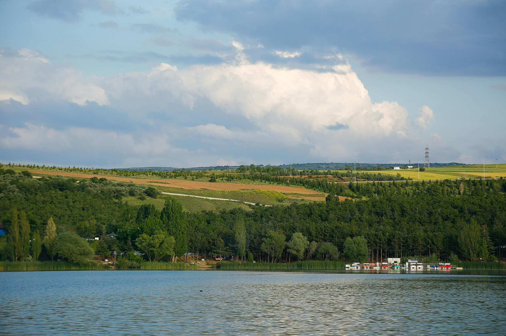
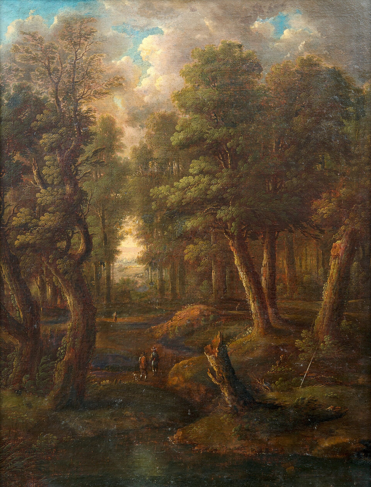
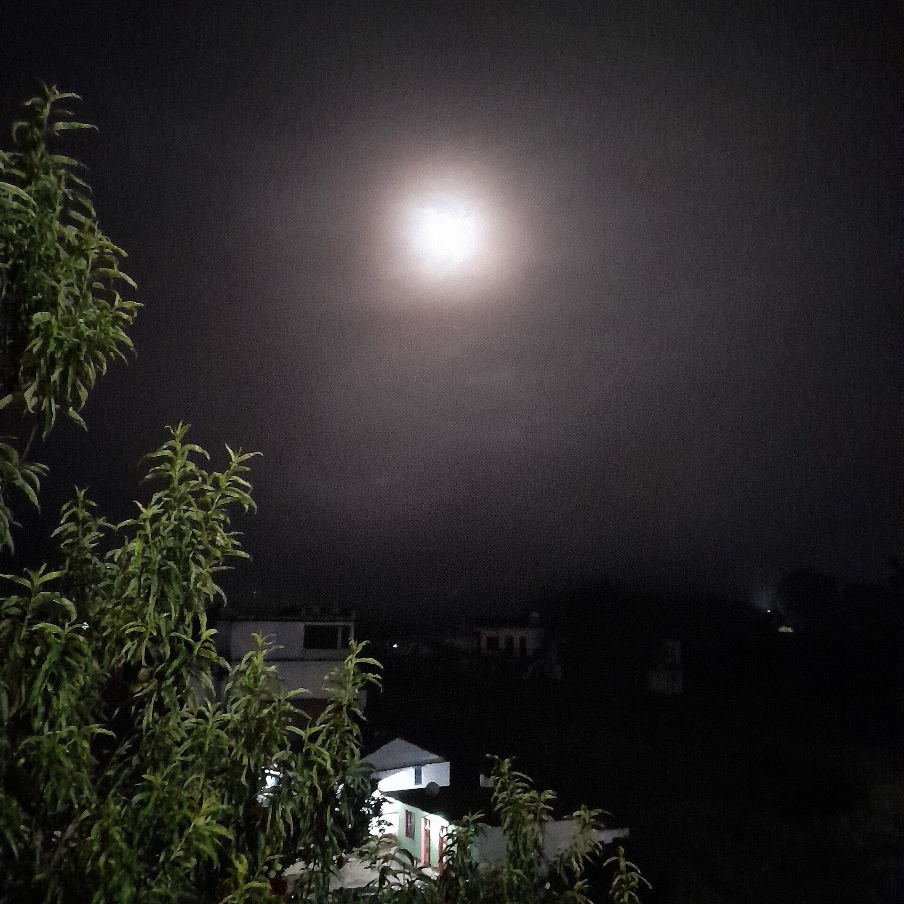
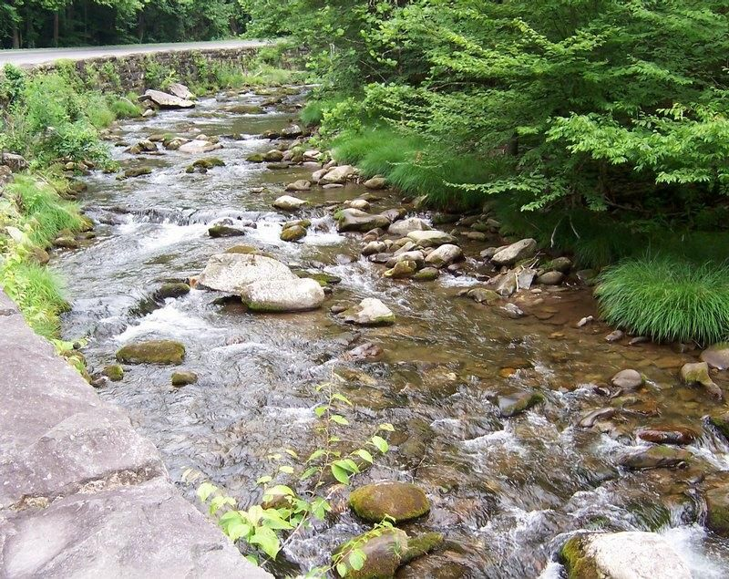
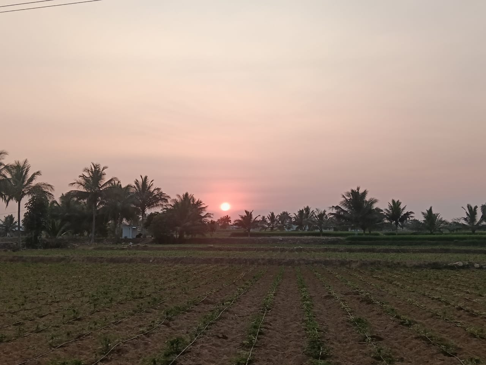

BASE · SYNTHESIS
0.918Synthesis baseline
procedural synthesis only
構造補正risk0.082
Fatigue0.105
Chaos0.115
Low-end0.244
Long-form0.000
Section novelty0.187
3 sections-21.8 LUFS-3.7 dBTP
好み
Scene fit
同じ生成エンジンでも、Scene semanticsから選ぶ環境素材を変えると何が変わるかを比較します。入力画像＋テキストをSwiftでExpressionとSceneへ解釈し、Scene側がbed / texture / transient / ornamentを選択します。
夕暮れの海辺。穏やかな波と風が続き、遠くまで開けている。
Sunset coast · coast ocean beach
warmth 0.58 · nostalgia 0.33 · openness 0.68 · motion 0.27 · tension 0.10
dorian · 88 BPM · density 0.30 · space 0.65
Input image source · Public Domainprocedural synthesis only
bed · ocean
bed · ocean / texture · wind
bed · ocean / texture · wind / transient · birds / ornament · glass
bed · ocean / texture · wind / transient · birds / ornament · glass
bed · ocean / transient · birds

静かな湖畔。水面はほとんど動かず、弱い風と遠い鳥だけが聞こえそう。
Quiet lakeside · lake
warmth 0.45 · nostalgia 0.29 · openness 0.69 · motion 0.27 · tension 0.11
dorian · 88 BPM · density 0.29 · space 0.64
Input image source · CC0procedural synthesis only
bed · lake_water
bed · lake_water / transient · birds
bed · lake_water / texture · wind / transient · birds / ornament · glass
bed · lake_water / transient · birds
bed · lake_water / texture · wind / transient · birds / ornament · glass

昼の森。木々に囲まれ、葉が風で揺れ、鳥の気配がある。
Forest trail · forest
warmth 0.51 · nostalgia 0.29 · openness 0.54 · motion 0.29 · tension 0.10
dorian · 92 BPM · density 0.33 · space 0.57
Input image source · Public Domainprocedural synthesis only
texture · foliage / transient · birds / texture · wind / transient · wood
texture · foliage / transient · birds / texture · wind / transient · wood
texture · foliage / transient · birds / texture · wind / transient · wood
texture · foliage / transient · birds / texture · wind / transient · wood
texture · foliage / texture · wind

夜の田園と小さな集落。人の音は少なく、虫と弱い風が続く静かな夜。
Quiet village at night · rural village
warmth 0.50 · nostalgia 0.32 · openness 0.56 · motion 0.25 · tension 0.11
dorian · 86 BPM · density 0.27 · space 0.59
Input image source · CC0procedural synthesis only
bed · insects / transient · wood
bed · insects / texture · foliage / transient · wood / ornament · bell
bed · insects / texture · foliage / transient · wood / ornament · bell
bed · insects / transient · wood
bed · insects / texture · foliage / transient · wood / ornament · bell

森の中を小さな渓流が流れている。せせらぎが中心で、葉と風が周囲を包む。
Forest stream · forest stream
warmth 0.49 · nostalgia 0.29 · openness 0.55 · motion 0.27 · tension 0.11
dorian · 91 BPM · density 0.32 · space 0.58
Input image source · Public Domainprocedural synthesis only
bed · stream / texture · foliage
bed · stream / texture · foliage / transient · birds / texture · wind
bed · stream / texture · foliage / transient · birds / texture · wind
bed · stream / transient · birds
bed · stream
森の滝。強い水の流れと飛沫が主役で、他の細かな音は少ない。
Forest waterfall · waterfall forest
warmth 0.46 · nostalgia 0.29 · openness 0.53 · motion 0.30 · tension 0.10
dorian · 92 BPM · density 0.33 · space 0.57
Input image source · Public Domainprocedural synthesis only
bed · waterfall / texture · wind
bed · waterfall / texture · wind
bed · waterfall / texture · wind
bed · waterfall / texture · wind
bed · waterfall / texture · wind
雪に覆われた山と平原。冬の乾いた風があり、虫や水の気配はほとんどない。
Snow mountain · snow mountain winter
warmth 0.43 · nostalgia 0.29 · openness 0.69 · motion 0.27 · tension 0.11
dorian · 91 BPM · density 0.32 · space 0.64
Input image source · CC0procedural synthesis only
bed · snow_winter / bed · wind
bed · snow_winter / bed · wind
bed · snow_winter / ornament · glass / bed · wind
bed · snow_winter / ornament · glass / bed · wind
bed · snow_winter / bed · wind / ornament · glass

開けた田園の夕暮れ。弱い風が草を動かし、昼の鳥から夜の虫へ移る手前の時間。
Open farm field · field rural
warmth 0.57 · nostalgia 0.33 · openness 0.55 · motion 0.26 · tension 0.13
dorian · 91 BPM · density 0.33 · space 0.58
Input image source · CC0procedural synthesis only
bed · wind
bed · wind / transient · birds
bed · wind / texture · foliage / transient · birds / ornament · bell
bed · wind / texture · foliage / transient · birds / ornament · bell
bed · wind / texture · foliage